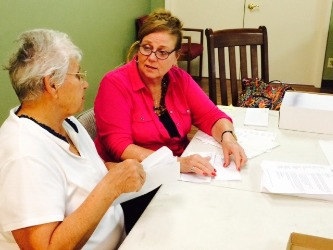
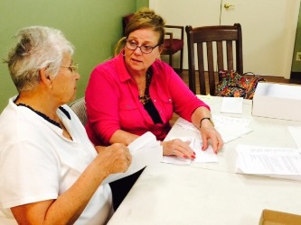
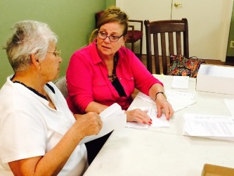

The Center relies on the skills and talents of our volunteers in order to maintain
our quality programs and services. We welcome volunteers to assist with a wide
range of activities. The following volunteer opportunities include:
To learn more about volunteer opportunities, contact Cynthia Turnquest, Director of Outreach & Strategic Partners.
The Center has four signature special events - the Gala, the Golf Outing, and two Walks of Hope. If you are looking for a meaningful way to support The Center, please consider these volunteer opportunities:

To learn more about special events volunteer opportunities, contact Amanda Nellett, Special Events Coordinator.
The Center benefits from the efforts of numerous ancillary boards. These board members act as ambassadors for The Center as well as organize various fundraising events throughout the year.
To learn more about volunteer opportunities, contact Cynthia Turnquest, Director of Outreach & Strategic Partners.
The Village Door provides a unique shopping experience for those in search of fine furniture, antiques, collectibles, and much more. All proceeds from the purchases at The Village Door benefit The Center. New volunteers are welcome and no sales experience is necessary.
To learn more about volunteer opportunities, contact Cynthia Turnquest, Director of Outreach & Strategic Partners.